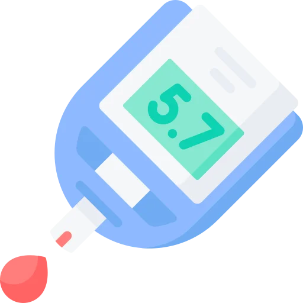

Four look-alike pairs and a lot of numbers. Type 1 or Type 2, DKA or HHS, high or low, and which drug can drop a patient on its own.
Diabetes is a big topic that reduces to a small number of decisions. Almost every question is a discrimination or a threshold, and the mistakes are predictable.
Insulin drives potassium into cells. In DKA the total body potassium is already depleted, even when the serum level reads normal or high.
Give insulin without replacing it and the level falls off a cliff. This is the single most dangerous mistake in the whole guide, and it is a favourite question.
The peak is the only part of that table that changes what you do. Peak is when the patient goes low, so peak is when food has to be there.
A patient on NPH who skips lunch is a question waiting to happen.
Hypoglycemia has two treatments. One assessment picks between them. Can this patient protect their airway.
Juice into an unresponsive patient is an aspiration, not a treatment.
Only three classes do it alone. Everything else works in a glucose-dependent way, so it cannot push the level below normal by itself.
Knowing which three lets you answer a whole family of questions in one step.
For every entry below, you should be able to say four things with the book closed: the one-sentence definition, the clue you would see in a patient, the priority nursing action, and the first-line drug with its teaching point.
If you cannot say all four out loud, you do not know it yet. Familiarity is not recall.
| Entity | Definition in one sentence | Clue in the scenario | Priority action | First-line drug |
|---|---|---|---|---|
| Type 1 | Autoimmune destruction of beta cells, so no insulin is produced at all. | Young, thin, sudden onset, three P's, sometimes already in DKA. | Insulin, and teach that it is never stopped. | Insulin. There is no alternative; this is replacement, not treatment. |
| Type 2 | Cells resist insulin, and beta-cell output slowly falls behind. | Adult, often overweight, gradual, often found on a routine test. | Lifestyle change plus a drug. Check the kidneys before choosing. | Metformin. No hypoglycemia alone, and it is held for contrast dye. |
| DKA | No insulin at all, so fat is burned for fuel and ketones acidify the blood. | Glucose 250 to 600, pH under 7.35, Kussmaul breathing, fruity breath. | Fluids, then insulin, and check the potassium before the insulin. | IV regular insulin, with fluids and potassium alongside it. |
| HHS | Some insulin is present, so no ketones form, but glucose climbs enormously. | Glucose over 600, no ketones, profound dehydration, confusion. | Fluids first, and a great deal of them. | IV fluids lead. Insulin follows, because rehydration alone drops the glucose. |
| Hypoglycemia | Glucose under 70 mg/dL, from too much drug, too little food, or too much activity. | Shaky, sweaty, tachycardic. Then confused, then unresponsive. | Check whether they can swallow safely. That decides everything. | Conscious, 15 g of fast carbohydrate. Unconscious, IV D50 or IM glucagon. |
Five rows on one index card, by hand. Type 1 has no insulin, Type 2 cannot use it. DKA has ketones, HHS does not. Under 70 is low, and conscious decides the route. That card is most of the exam.
Discrimination axis: is there no insulin, or is there insulin that does not work.
Insulin comes from the beta cells of the pancreatic islets. Its job is to let glucose into cells. Without it working, glucose piles up in the blood while the cells starve.
That last phrase explains the classic presentation. The body thinks it is starving, because as far as the cells are concerned it is.
They are not a list to memorise. They are three consequences of one problem.
Fatigue and blurred vision come along with them.
Any one of these confirms diabetes. It has to be confirmed on a second day unless the hyperglycemia is unequivocal.
Glucose sticks to hemoglobin, and a red cell lives about 3 months. So the HbA1c is an average of the last 2 to 3 months, and no single bad day moves it much.
An HbA1c of 7 percent is an average glucose around 154 mg/dL. Each 1 percent is worth roughly 28 to 30 mg/dL.
It needs no fasting. But anything that changes red cell turnover makes it unreliable. Hemolytic anemia, a recent transfusion, sickle cell disease.
This band is reversible, and that is worth saying to patients plainly. Lose 7 percent of body weight. Do 150 minutes of moderate exercise a week. That cuts the risk of progressing to Type 2 by 58 percent.
Discrimination axis: are there ketones.
Both are emergencies. They come from the same disease and they need different priorities, so the exam separates them constantly.
Triggers: missed insulin, illness or infection, new Type 1, surgery, stress.
Triggers: illness or infection, not drinking enough, steroids or thiazides, and older age.
It comes down to whether any insulin is left.
In DKA there is none, so the body burns fat instead, and burning fat produces ketones, and ketones are acids. Hence the low pH, the Kussmaul breathing that blows off CO2 to compensate, and the fruity breath.
In HHS there is a little insulin. Not enough to control the glucose, but enough to stop fat breakdown. So no ketones, no acidosis, and instead the glucose climbs until the osmotic diuresis has dried the patient out completely.
DKA is an acid problem. HHS is a water problem.
Not the glucose. Insulin pushes potassium into cells, so giving insulin to a depleted patient can produce fatal hypokalemia and cardiac arrest.
Check it before the drip starts. Every time.
Fluid leads. These patients can be 8 to 12 litres down. Rehydration alone brings the glucose a long way toward normal, by dilution and by restoring renal clearance.
Insulin comes second here rather than first. HHS patients are usually older. Watch the heart and the lungs while you fill them. Fluid overload is a real risk.
Blank paper. Two columns, DKA and HHS. Glucose, pH, ketones, breathing, mental status, and the first thing you hang. Twelve cells, from memory.
Discrimination axis: can this patient safely swallow.
Hypoglycemia is glucose under 70 mg/dL, and it is the most dangerous acute complication of treating diabetes. A high glucose damages a patient over years. A low one can do it in minutes.
These are the body's warning system firing. The patient can still act on them.
Now the patient cannot help themselves, and the route of treatment changes.
Conscious and able to swallow: the rule of 15. Give 15 g of fast carbohydrate. That is 4 oz of juice, 3 to 4 glucose tablets, or a tablespoon of honey. Wait 15 minutes. Recheck. Repeat if still under 70. Then follow with a complex carbohydrate and protein so it does not fall again.
Not conscious: nothing by mouth, ever. IV dextrose 50 percent, 25 to 50 mL, or 1 mg of glucagon intramuscularly. Position them on their side to protect the airway.
You are not choosing between these on severity of the number. You are choosing on whether the airway is safe.
The early symptoms are adrenaline. A beta-blocker blocks adrenaline, so it blocks the tremor and the tachycardia and leaves only the sweating.
Long-standing diabetes does the same thing by blunting the response over years. Either way, they go from fine to confused with nothing in between. So they need closer monitoring and slightly higher targets.
Three numbers per insulin, and only one of them changes your nursing care. The peak is when hypoglycemia happens, so the peak is when food has to be available.
| Category | Examples | Onset | Peak | Duration | What matters |
|---|---|---|---|---|---|
| Rapid-acting | Lispro, aspart | 10 to 15 min | 1 to 2 hr | 3 to 5 hr | Give with the meal, within 15 minutes of it |
| Short-acting | Regular | 30 to 60 min | 2 to 4 hr | 6 to 8 hr | 30 minutes before the meal. The only insulin that can go IV |
| Intermediate | NPH | 1 to 2 hr | 4 to 12 hr | 18 to 24 hr | Cloudy. Roll it, never shake it. Never IV |
| Long-acting | Glargine, detemir | 1 to 2 hr | No peak | 24 hr | Once daily at the same time. Never mixed with anything |
Rapid-acting peaks at 1 to 2 hours, so the low comes just after the meal. NPH peaks at 4 to 12 hours, so the low comes in the late afternoon or overnight. Long-acting has no peak at all, which is exactly why it carries the lowest risk.
That is the entire table reduced to one useful question: when will this patient go low, and will there be food.
Regular before NPH. Clear before cloudy. The letters R and N are in alphabetical order, which is the easiest way to keep it.
Air into the NPH vial first without withdrawing any. Then air into the Regular vial, and draw the Regular up. Then draw up the NPH.
The reason is contamination. If cloudy NPH gets into the Regular vial, you have turned a clear fast insulin into an unpredictable one.
Humalog and Humulin. NovoLog and Novolin. One letter apart, and completely different drugs.
Humalog and NovoLog are rapid-acting. Humulin and Novolin come as R or N. Read the full name and the letter, not the brand at a glance. Insulin is a high-alert medication and gets an independent double check.
Discrimination axis: does this drug work regardless of the glucose level, or only when it is high.
Type 2 is managed stepwise. Lifestyle, then metformin, then something added on. What you need per class is the side effect and whether it can cause a low.
| Class | Examples | What it does | Hypo alone | What you watch for |
|---|---|---|---|---|
| Biguanide | Metformin | Cuts glucose production by the liver | No | Hold for contrast dye. Check renal function. GI upset is common |
| Sulfonylureas | Glipizide, glyburide, glimepiride | Makes beta cells release insulin | Yes | Hypoglycemia and weight gain. Taken before meals |
| Meglitinides | Repaglinide, nateglinide | Short sharp insulin release | Yes | No meal, no pill. Taken within 30 minutes of eating |
| TZDs | Pioglitazone | Improves insulin sensitivity | No | Contraindicated in heart failure. Fluid retention and fracture risk |
| DPP-4 inhibitors | Sitagliptin, linagliptin | Makes the natural incretins last longer | No | Well tolerated, weight neutral. Watch for pancreatitis |
| GLP-1 agonists | Semaglutide, liraglutide | Mimics an incretin at high concentration | No | Black box for thyroid C-cell tumours. Causes weight loss. Cardiovascular benefit |
| SGLT2 inhibitors | Empagliflozin, dapagliflozin | Stops the kidney reabsorbing glucose | No | Urinary and genital infections, and euglycemic DKA. Cardiac and renal benefit |
| Alpha-glucosidase inhibitors | Acarbose | Slows carbohydrate absorption from the gut | No | Gas and bloating. Treat a low with glucose tablets only |
Everything else acts only when glucose is high, so it runs out of effect before the level goes below normal. That is the whole rule, and it answers a family of questions in one step.
Any of them can still contribute to a low when combined with insulin or a sulfonylurea.
Acarbose blocks the enzyme that breaks disaccharides into glucose. So if a patient on acarbose goes low, table sugar and juice will not work; the sugar cannot be split.
They need glucose itself. Glucose tablets, or IV dextrose. This is a small fact that gets tested precisely because it looks like an exception until you know why.
Years of high glucose damage blood vessels. Small vessels and large vessels fail differently, which is why the complications sort into two groups.
| Complication | What happens | What you do about it |
|---|---|---|
| Retinopathy | Retinal vessels are damaged, producing microaneurysms, hemorrhages and vision loss | Dilated eye exam annually. Report vision change straight away |
| Nephropathy | Glomerular damage leads to protein in the urine, then progressive renal failure | Annual urine albumin. Control the blood pressure, with an ACE inhibitor or ARB for renal protection. Track BUN and creatinine |
| Neuropathy | Peripheral nerves go numb and tingle. Autonomic nerves cause gastroparesis and orthostatic hypotension | Daily foot inspection. Monofilament testing. Proper shoes. Report new numbness |
Neuropathy means the patient cannot feel an injury. Peripheral vascular disease means the injury will not heal. Put those together and a blister nobody noticed becomes an infection that costs a limb.
Foot complications are the leading cause of non-traumatic lower limb amputation. Daily inspection is not a soft recommendation.
Diabetes is managed almost entirely by the patient, on days you are not there. So teaching is not the soft part of this topic; it is the intervention.
This is the mistake that fills emergency departments. The patient reasons that they are not eating, so they do not need insulin.
But illness releases cortisol, glucagon and epinephrine, and all three raise glucose. Being sick means needing more insulin, not less, and a Type 1 patient who stops can be in DKA within hours.
Type 1 is the common form in childhood.
This complication of DKA is specific to children, and it is why paediatric DKA is corrected slowly.
Bring the glucose and the osmolality down too fast and water moves into brain cells. The signs are headache, a falling level of consciousness, bradycardia and hypertension.
Bradycardia with a rising blood pressure in a child being treated for DKA is not an improvement. It is raised intracranial pressure.
These should be automatic. If you have to reason toward one of them, it is not learned yet.
| Number | Meaning |
|---|---|
| 126 mg/dL or more | Fasting glucose that diagnoses diabetes |
| 6.5 percent or more | HbA1c that diagnoses diabetes |
| 200 mg/dL or more | Random glucose with symptoms that diagnoses it |
| 100 to 125 mg/dL | Fasting glucose of prediabetes |
| 5.7 to 6.4 percent | HbA1c of prediabetes |
| Under 7 percent | HbA1c target for most adults |
| 80 to 130 mg/dL | Fasting glucose target |
| Under 180 mg/dL | Two-hour post-meal target |
| Under 70 mg/dL | Hypoglycemia |
| 15 and 15 | Grams of carbohydrate, and minutes before rechecking |
| 25 to 50 mL of D50 | IV dextrose for an unconscious patient |
| 1 mg | Intramuscular glucagon dose |
| 250 to 600 mg/dL | Glucose range in DKA |
| Over 600 mg/dL | Glucose in HHS, often over 1000 |
| Under 7.35 | pH in DKA |
| 50 to 75 mg/dL per hour | Maximum safe rate to lower glucose |
| Under 3.3 mEq/L | Potassium at which you hold the insulin |
| 250 mg/dL | Glucose at which dextrose is added to the DKA fluids |
| 1 to 1.5 L per hour | Initial fluid rate in DKA |
| eGFR under 30 | Metformin contraindicated |
| 0.5 to 1.0 units/kg/day | Paediatric insulin dosing |
| 150 minutes a week | Exercise target |
Write these on the back of the index card from section 02. Test yourself on the meaning, not the number; the question gives you the number and asks what it means.
Reading this again will not move your score. Producing it will. Everything below is done with the page shut.
Pick any entry from section 02. Without looking, say the one-sentence definition, the clue you would see in a patient, the priority action, and the first-line drug with its teaching point.
If you can do that for all five, you are ready. If you cannot, you know exactly which section to reopen.
10 questions with full rationales covering Type 1 versus Type 2, DKA versus HHS, insulin types, oral agents, hypoglycemia and nursing priorities. Choose Practice Mode for instant feedback or Exam Mode to simulate test conditions.
Type 1 has no insulin. Always needs it. Goes into DKA.
Type 2 cannot use it. Starts on metformin. Goes into HHS.
Ketones separate them. DKA is acid, HHS is water.
Potassium before insulin. This is what kills people in DKA.
The peak is when they go low. Match food to the peak.
15 and 15 if conscious. D50 or glucagon if not.
Only three classes drop the glucose on their own.
Numb plus poor circulation is how a blister costs a foot.